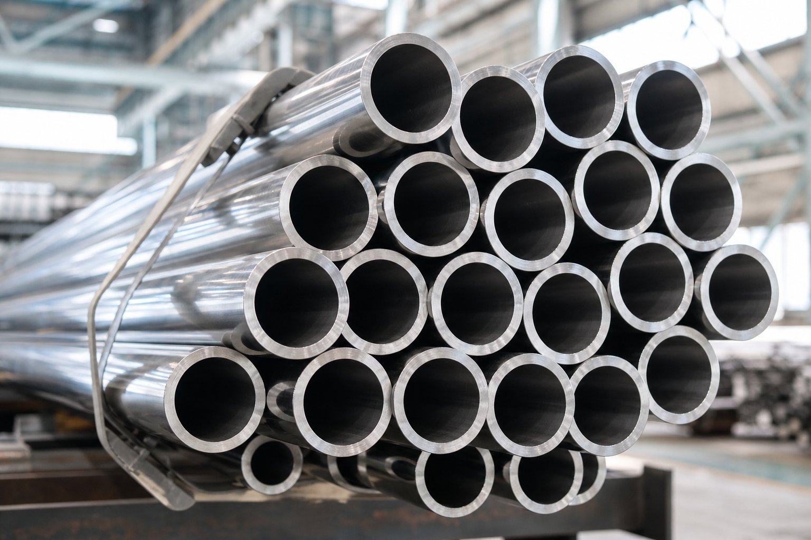

جایگاه استاندارد ابعاد لوله استنلس
این استاندارد ابعاد لولههای فولاد زنگنزن را از سایز یکهشتم اینچ تا سی اینچ پوشش میدهد و مرجع هماهنگی لوله استنلس با فلنجها و اتصالات است. قطرهای خارجی دقیقاً مشابه استاندارد ابعاد لوله کربنی است؛ تفاوت اصلی در تعریف سریهای ضخامت مخصوص است.

سریهای ضخامت با پسوند اس
برخلاف لوله کربنی که ضخامتها با عدد اسچول یا عناوین استاندارد و زیاد بیان میشوند، لوله استنلس از سریهای مخصوص استفاده میکند:
| سری | توضیح |
|---|---|
| پنج اس و ده اس | ضخامتهای سبک برای سرویسهای کمفشار و بهداشتی |
| چهل اس | معادل تقریبی سری چهل کربنی تا سایز ده اینچ |
| هشتاد اس | معادل تقریبی سری هشتاد کربنی تا سایز ده اینچ |
| سایر سریها | برای کاربردهای خاص در برخی سایزها |
از سایز دوازده اینچ به بالا، ضخامت سریهای چهل اس و هشتاد اس لزوماً برابر معادل کربنی نیست.
محاسبه وزن لوله استنلس
فرمول وزن مشابه لوله کربنی است اما با چگالی فولاد زنگنزن (حدود ۷٫۹ تا ۸ گرم بر سانتیمتر مکعب بسته به گرید). در عمل، وزن هر متر لوله استنلس در ابعاد برابر کمی بیشتر از کربنی است. این تفاوت در برآورد تناژ و هزینه حمل باید لحاظ شود.
تفاوتهای کلیدی با لوله کربنی
- قطرهای خارجی یکسان؛ تفاوت فقط در ضخامت دیواره.
- برخی سریهای استنلس در سایزهای بزرگ نازکتر از معادل کربنی هستند.
- چگالی بالاتر و در نتیجه وزن بیشتر در ابعاد برابر.
- تلرانسهای ساخت متناسب با روش تولید استنلس.
- در اسناد خرید، ذکر پسوند اس برای جلوگیری از ابهام ضروری است.
نکات سفارشدهی
- سایز اسمی را همراه سری ضخامت (با پسوند اس) ذکر کنید.
- در سایزهای دوازده اینچ به بالا، ضخامت دقیق را نیز بنویسید.
- گرید و استاندارد ساخت لوله را مشخص کنید.
- طول شاخه و نوع انتها را قید کنید.
- گواهی مواد با شماره ذوب را درخواست کنید.
جمعبندی
استاندارد ابعاد لوله استنلس، زبان مشترک این خانواده با سایر اجزای خط است. ذکر دقیق سری ضخامت در سایزهای بزرگ، از ناهماهنگی در مونتاژ و اختلاف در تناژ جلوگیری میکند.
سوالات رایج
چرا ضخامت لوله استنلس با پسوند اس نوشته میشود؟
استاندارد ابعاد لوله استنلس سریهای ضخامت را با پسوند اس تعریف میکند تا از سریهای لوله کربنی متمایز شوند. برخی از این سریها در سایزهای بزرگ ضخامت کمتری از معادل کربنی دارند.
آیا قطر خارجی لوله استنلس با کربنی یکسان است؟
بله؛ قطرهای خارجی در هر دو استاندارد یکسان است و لوله استنلس و کربنی همسایز روی فلنج و اتصال مشترک سوار میشوند. تفاوت فقط در ضخامت دیواره و چگالی است.
وزن لوله استنلس چطور محاسبه میشود؟
با همان فرمول وزن لوله اما با چگالی بالاتر فولاد زنگنزن (حدود هشت برابر آب). به همین دلیل در سایز و ضخامت برابر، لوله استنلس سنگینتر از کربنی است.
در چه سایزهایی تفاوت ضخامت مهم میشود؟
از سایز دوازده اینچ به بالا، ضخامت برخی سریهای استنلس از معادل کربنی متفاوت است. در سفارشهای سایز بزرگ حتماً سری یا ضخامت دقیق را ذکر کنید.
مطالب مرتبط
- استاندارد ابعاد لوله کربنی (ASME B36.10M)
- اسچول لوله — جدول ضخامت و وزن
- راهنمای لوله استنلس (ASTM A312)
- راهنمای ابعاد لوله — سایز اسمی، دیان و اسچول
- راهنمای جامع لوله مانیسمان
در استعلام، سایز اسمی، سری ضخامت یا ضخامت دقیق و گرید را مشخص کنید تا لوله با ابعاد منطبق بر استاندارد ابعادی لوله استنلس عرضه شود.
مشاهده صفحه محصول ← ثبت RFQ همین محصولتامین این تجهیزات را به پیشرو تجهیز فرتاک بسپارید
شرکت پیشرو تجهیز فرتاک تامینکننده تخصصی تجهیزات صنعتی برای پروژههای نفت، گاز، پتروشیمی، فولاد و نیروگاهی است. برای دریافت پیشنهاد فنی و قیمت، استعلام (RFQ) خود را ثبت کنید تا کارشناسان مهندسی فروش در کوتاهترین زمان پاسخ دهند.
- تامین لوله استنلسلوله بدون درز و درزجوش با ابعاد استاندارد
- تامین تجهیزات پایپینگفلنج و اتصالات استنلس همسایز با خط